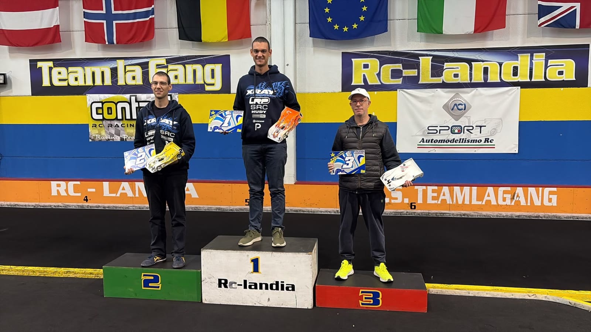

Affari di famiglia
A RcLandia Orlando e Riccardo Fenili danno un giro a tutti: primo e secondo in ogni finale, con il terzo sempre staccato di almeno un giro. Dietro di loro Galli si prende il podio e la testa del campionato, mentre a Bianchi non ne va dritta una.
Alla prima prova i Fenili non c'erano: aveva vinto Bianchi partendo dalla pole, davanti a Galli. A Scandiano i due fratelli si presentano per la prima volta in stagione, e la famiglia è al completo, con la sorella Vittoria in pista nella 1/12 LMH. Basta la mattina per capire che la giornata avrà un padrone, anzi due.
Prove e qualifiche
Il ritmo dei Fenili
Nelle prove libere il più rapido è Orlando Fenili, per un soffio davanti a Neri. Nelle qualifiche i fratelli si dividono le manche: Orlando vince la prima, la seconda e la quarta, Riccardo la terza. Per gli altri resta la lotta per il terzo posto, dove si alternano Galli, Bianchi e Neri, che però si ferma presto in due manche su quattro.
La griglia delle finali vede Orlando in pole e Riccardo accanto a lui, poi Bianchi, Galli, Neri e Mazzini.
Finale 1
La prima di Orlando
Orlando parte davanti, Riccardo si mette alle sue spalle e da lì i due se ne vanno. Per Bianchi invece la finale si complica subito: nei primi giri sbaglia dopo un contatto, poi ancora da solo, e da quel momento la sua macchina non sembra più la stessa. Dopo tredici giri si ferma.
Orlando vince davanti a Riccardo. Galli chiude terzo, Neri quarto, Mazzini quinto.
Finale 2
Due giri su tutti
La seconda finale è la più netta. Al via Bianchi resta coinvolto nei contatti dei primi metri, perde molto tempo e dopo tre giri si ferma di nuovo.
Davanti Orlando trova il suo passo migliore e firma il giro più veloce della giornata. Riccardo è secondo, Neri questa volta si prende il terzo posto, Galli chiude quarto.
Finale 3
Il derby in famiglia
L'ultima finale regala l'unico vero duello tra i fratelli. Al via Orlando perde qualcosa e per quattro giri a comandare è Riccardo. Al quinto giro Riccardo perde un attimo e Orlando torna davanti, questa volta per restarci.
Dietro, il terzo posto è una contesa tra Galli e Bianchi. Bianchi passa Galli a metà gara, ma al giro successivo sbaglia da solo vicino all'isola dopo curva 1 e Galli si riprende il terzo posto, questa volta per tenerlo fino alla fine.
Orlando vince la sua terza finale, Riccardo è secondo, Galli terzo, Bianchi quarto. Neri chiude quinto, mentre Mazzini si ferma prima della fine.
Tre finali su tre a Orlando, tre secondi posti a Riccardo e un giro di vantaggio sugli altri ogni volta: la giornata è dei Fenili. Il paradosso è che il campionato non lo guidano loro, perché alla prima prova non c'erano. In testa c'è Galli, terzo di giornata, con due punti su Bianchi, che dopo la vittoria della prima prova arrivava a Scandiano da leader e se ne va con due ritiri e un podio sfumato: una domenica in cui a Bianchi non ne va dritta una.
Se i Fenili continueranno così, la classifica avrà presto altri padroni.
Il podio di giornata

PoleOrlando Fenili
Giro veloceOrlando Fenili · 11.435
- Riccardo Fenili2
- Orlando Fenili1
- Marcello Galli3
4. Mario Neri · 5. Alessandro Bianchi · 6. Marco Mazzini